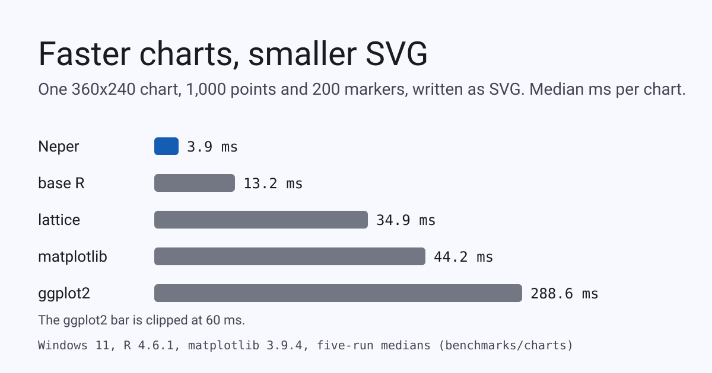

Faster charts, smaller SVG, and what we are doing about PNG size

We measured Neper's chart engine against the three R plotting systems and matplotlib on one machine, one workload and one data set. Neper writes the chart 3.4 to 73 times faster as SVG and 2.1 to 24 times faster as PNG, and its SVG is 28 to 32 percent smaller. Its PNG is the one column it loses: R's files are about three times smaller. This post has the numbers, the reason, what we tried, and the lossy step we added.
The workload
The same chart in every program: a 1,000-point line and 200 square markers drawn from one deterministic data set (a sine plus linear-congruential noise, computed exactly in all of them), a fixed plot rectangle in a 360x240 image, y limits -2 to 2.5, a y grid with tick labels at -2, 0 and 2, and a title. Each program draws 200 charts per pass and writes each to memory or a file as SVG (text kept as text) and as PNG, and we keep the median of five passes. R 4.6.1 (ggplot2 and svglite from CRAN, lattice from the distribution) and matplotlib 3.9.4 ran on the same Windows 11 laptop as Neper, whose chart code is e.gfx.chart over a borrowed-columns layout, a streaming SVG writer, and a CPU rasterizer into e.fmt.png. We checked the first ggplot2 chart by eye before trusting any R number; the line, the markers, the title and the ticks are all there.
Time
| Per chart, median | Neper | base R | lattice | matplotlib | ggplot2 |
|---|---|---|---|---|---|
| SVG, ms | 3.9 | 13.2 | 34.9 | 44.2 | 288.6 |
| PNG, ms | 11.0 | 23.6 | 51.6 | 45.8 | 261.8 |
Against base R, the fastest of the others, Neper is 3.4 times faster as SVG and 2.1 times as PNG; against matplotlib 11.3 and 4.2 times; against ggplot2, which builds a grob tree and a gtable for every chart, 73 and 24 times. R's packages take 0.76 s to load once and matplotlib 1.46 s; for the whole 200-chart job (both formats, both passes) Neper took 3.8 s and matplotlib 19.9 s. The design is the whole reason: layout from borrowed columns into caller-owned storage, a streaming writer, no figure object model, and a PNG encoder that is not the bottleneck any more (the raster step is 3.4 ms of the 11.0 ms; the rest is deflate, which D4400 made about twice as fast).
Size
| Bytes per chart | Neper | base R | lattice | matplotlib | ggplot2 |
|---|---|---|---|---|---|
| SVG | 30,224 | 41,811 | 42,468 | 44,387 | 41,883 |
| PNG | 11,334 | 3,185 | 2,951 | 11,217 | 3,449 |
The SVG is where Neper's output is smallest: 28% smaller than base R and 32% smaller than matplotlib. It writes coordinates at 0.01 px (D2111); before that change its SVG was larger than matplotlib's.
The PNG column is the honest one. Neper writes 11,334 bytes; R's three devices write about 2,951 to 3,449. matplotlib's 11,217 sits next to Neper's, so this is not a Neper quirk, it is how R's png() device draws.
Why R's PNG is a third the size
We opened both files. R's chart has 81 distinct colours and is written as an 8-bit indexed PNG; Neper's has 961 and is written as 32-bit RGBA with no palette. R's device renders with a coarse anti-aliasing step; Neper blends each ink with the background at every one of 256 coverage levels, so a 360x240 chart with three inks lands near a thousand colours. All 961 are legitimate pixels, and none of them can go in a 256-entry palette without being changed. So the question is how much we can save without changing anything, and how much by changing a little.
What we tried, lossless
| Same pixels, one chart | Bytes |
|---|---|
As written today (RGBA, filter none, .Balanced) | 11,334 |
.Best instead of .Balanced | 11,096 |
| Tell the encoder the image is opaque (RGB, no alpha channel) | 10,993 |
Opaque and .Best | 10,412 |
Per-row filters chosen by libpng's heuristic (encode_adaptive) | 14,431–15,082 |
| Per-row filters chosen by trial deflate of each row (a Python experiment) | about 10,200 |
| Pillow's default PNG writer | 14,818 |
Two things stand out. First, declaring the image opaque and asking for .Best gets 8% for free, and the benchmark's PNG pass now measures both. Second, the row-filter heuristic that every PNG library uses makes this picture worse by a third: flat colour with soft edges is exactly what filter None plus a good match finder compresses best, and no filter trial we ran beat that by more than the noise. encode_adaptive stays for photographs and gradients, where it wins; for charts it is the wrong tool, and it now says so in its documentation.
What we added, lossy and opt-in
A lossless PNG cannot get near R's size with this many colours, so we added the lossy step separately and made it explicit. e.fmt.png.quantize keeps the N most frequent colours of the picture and maps every other colour to the nearest kept one by squared distance over the four channels; encode_quantized then writes the result as an indexed PNG. Both choices have fixed tie-breaks, so the output is a function of the picture, and the fixture compares it with an independent Python model of the rule. An image that already has no more colours than asked is written unchanged, and a photograph (more than 3,072 distinct colours) is refused rather than butchered.
| Colours kept | Bytes | Largest channel error (of 255) |
|---|---|---|
961 (lossless, opaque, .Best) | 10,412 | 0 |
| 256 | 6,004 | 17 |
| 128 | 4,997 | 55 |
| 64 | 4,376 | 109 |
| 32 | 4,045 | 109 |
R's png(), for comparison | 3,412 | (different anti-aliasing) |
At 256 colours the chart is 6,004 bytes, 47% smaller than today's 11,334, with no pixel off by more than 17 of 255 (the mean error is 0.02). Median cut in Pillow reaches 6,047 bytes with a largest error of 16, so keeping the most frequent colours and snapping the rest costs nothing against the standard tool. Below 128 colours a popularity palette starts to put a rare coverage level on the wrong ink, and the error jumps; that is the point where a real quantizer with dithering is the next step, and we have not built one. We would not use fewer than 128 for a chart someone will read.
The cost is real. On a laptop that was also running builds, the indexed pass took about three times the plain pass per chart (15 ms plain, 29 ms opaque at .Best, 45 ms quantized at .Best), so it is worth it for files that are stored or sent, not for a hot loop that throws the PNG away. The quiet-machine figures are not in this post; the sizes are exact and do not depend on the load.
What this does not say
- One machine, one workload. A larger chart, a different font, or a heat map changes every ratio. The R ratios are far outside the run-to-run spread, the PNG size gap is not a spread at all.
- The libraries do different work. ggplot2 builds a theme and a layout engine we do not have; matplotlib shapes text with its own font manager. The workload fixes the visible content, not the internal work, and R's chart looks slightly different (its anti-aliasing is coarser).
- The first R numbers were taken while other jobs ran on the same laptop. They are medians of five, and the speed ratios are an order of magnitude beyond that noise, but a quiet-machine rerun of all columns is still owed.
- Linux was not measured. The WSL Python on this machine has neither matplotlib nor R.
Reproduce it
With R on the path (and ggplot2, svglite installed) and matplotlib, build and run the harness against the compiler of your choice:
$ python benchmarks/charts/run.py build/windows/tests/selfhost/neper-self.exe 5
$ Rscript benchmarks/charts/r_bench.R first-chart.png # keeps the first ggplot2 chart to look atThe sizes of the lossless variants and of the quantized charts come from benchmarks/charts/chart_bench.e (the png_opaque_best and png_indexed lines), the model of the colour reduction from scripts/gen_png_quant_test.py, and the raw results from benchmarks/charts/results/windows.json.